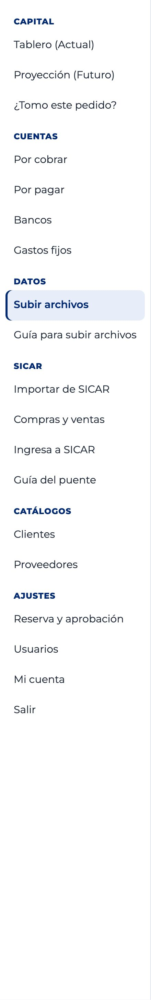
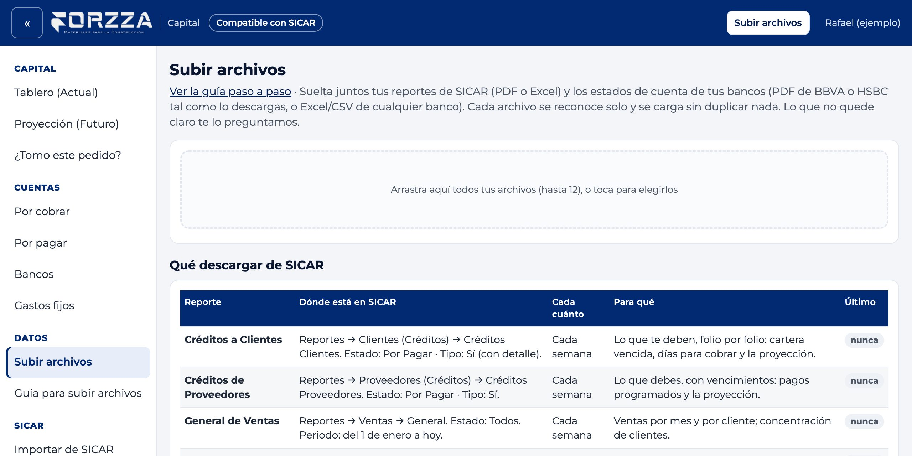
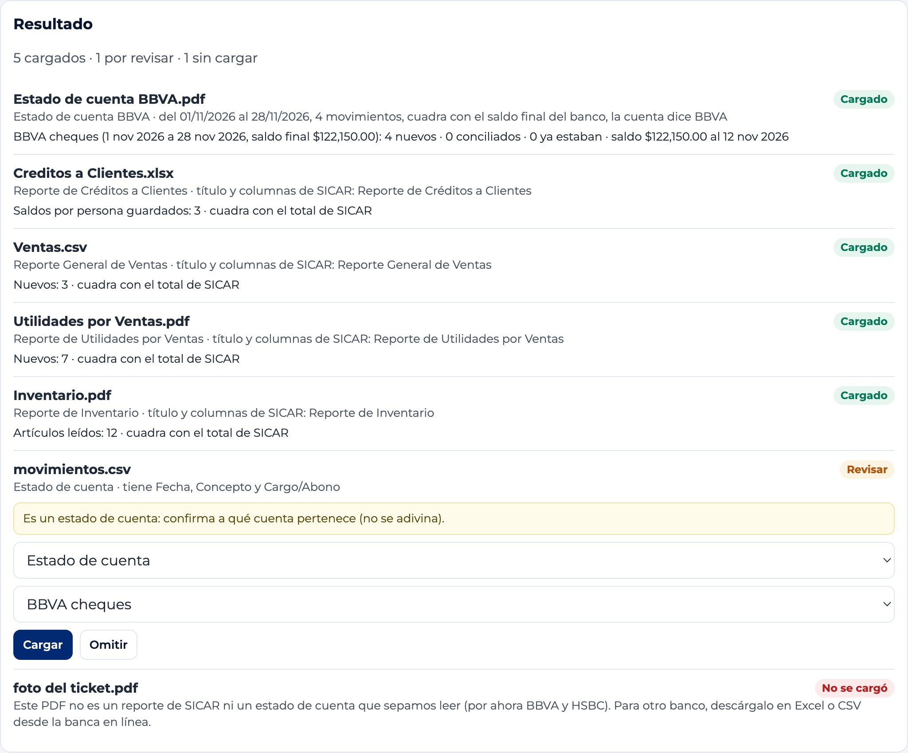
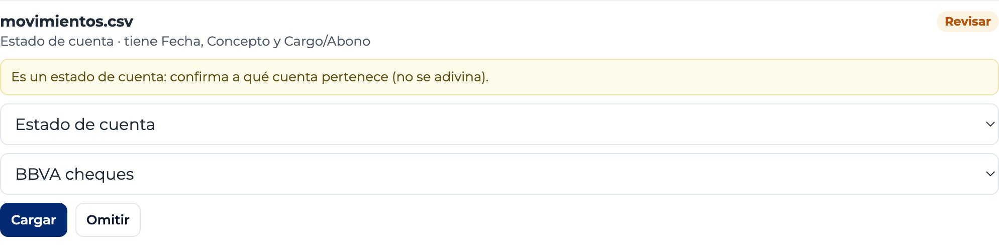
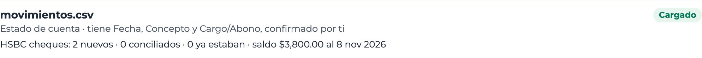
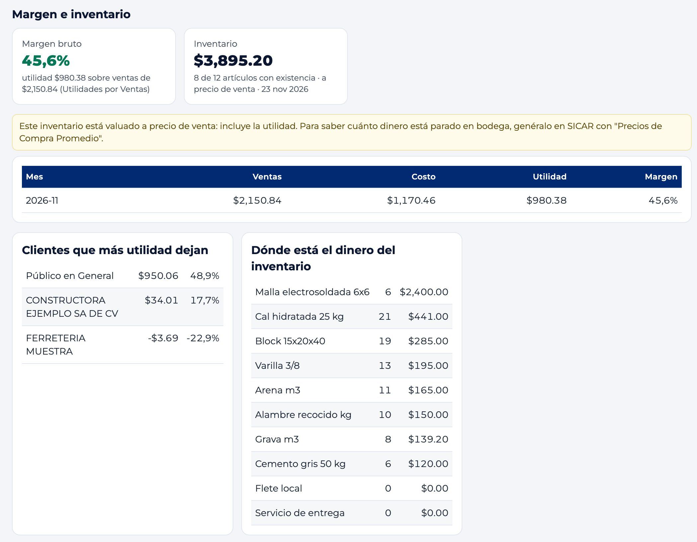
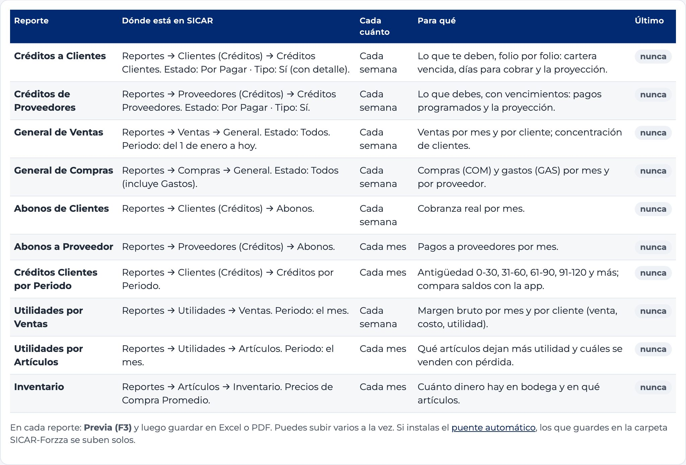
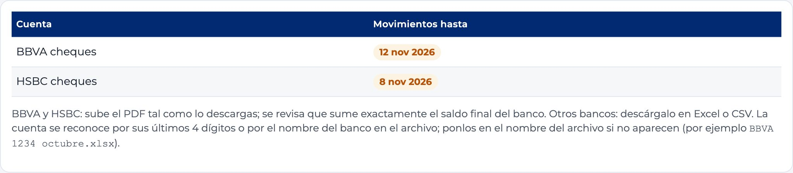

Cómo subir tus archivos a Forzza Capital
Descargas tus reportes de SICAR y tus estados de cuenta, los arrastras todos juntos a Forzza Capital y la app los reconoce sola. Toma unos 10 minutos a la semana.
- Entrar a SICAR en la computadora de la tienda (o a Nube SICAR).
- Entrar a la banca en línea de BBVA y de HSBC.
- Una cuenta de Forzza Capital de director o capturista. El contador solo puede ver, no subir.
Descarga los reportes de SICAR
En SICAR abre el menú Reportes, entra al reporte, elige el periodo y los filtros de la tabla, y toca Previa (F3). En la vista previa toca Excel (Alt+X) o PDF (Alt+P) y guárdalo en una carpeta fácil de encontrar, por ejemplo Documentos → Forzza.
IlustraciónLos botones de SICAR. Excel o PDF sirven igual.
| Reporte | Dónde está en SICAR | Filtros | Cada cuánto |
|---|---|---|---|
| Créditos a Clientes | Reportes → Clientes (Créditos) → Créditos Clientes | Estado: Por Pagar · Tipo: Sí | Cada semana |
| Créditos de Proveedores | Reportes → Proveedores (Créditos) → Créditos Proveedores | Estado: Por Pagar · Tipo: Sí | Cada semana |
| General de Ventas | Reportes → Ventas → General | Estado: Todos · del 1 de enero a hoy | Cada semana |
| General de Compras | Reportes → Compras → General | Estado: Todos (incluye Gastos) | Cada semana |
| Abonos de Clientes | Reportes → Clientes (Créditos) → Abonos | Periodo: la semana o el mes | Cada semana |
| Utilidades por Ventas | Reportes → Utilidades → Ventas | Periodo: el mes | Cada semana |
| Inventario | Reportes → Artículos → Inventario | Precios de Compra Promedio | Cada mes |
| Abonos a Proveedor | Reportes → Proveedores (Créditos) → Abonos | Periodo: el mes | Cada mes |
| Utilidades por Artículos | Reportes → Utilidades → Artículos | Periodo: el mes | Cada mes |
| Créditos Clientes por Periodo | Reportes → Clientes (Créditos) → Créditos por Periodo | — | Cada mes |
Descarga los estados de cuenta del banco
Entra a la banca en línea y descarga el estado de cuenta del mes completo.
- BBVA y HSBC: descarga el PDF tal como lo da el banco. No hace falta convertirlo.
- Otro banco (Banorte, Santander…): descárgalo en Excel o CSV, con las columnas Fecha, Concepto, Cargo y Abono.
Entra a «Subir archivos»
Abre Forzza Capital (aiagent.ringlypro.com/forzza/app). En el menú de la izquierda, bajo Datos, toca Subir archivos. También está el botón blanco Subir archivos arriba a la derecha.


Arrastra todos los archivos juntos
Abre la carpeta donde guardaste todo, selecciónalos todos (Ctrl+A en Windows, Cmd+A en Mac) y arrástralos al recuadro punteado. Puedes subir hasta 12 archivos a la vez.
¿Prefieres no arrastrar? Toca el recuadro, se abre la ventana para elegir archivos; ahí también puedes seleccionar varios.
Revisa el resultado
En unos segundos aparece una lista con lo que pasó con cada archivo:
| Cargado | Se reconoció y ya está en la app. Dice qué reporte es y si cuadra con el total que imprime SICAR o el banco. |
| Revisar | La app no está segura de algo (por ejemplo, a qué cuenta va un estado de cuenta). No se carga hasta que tú lo confirmes (paso 6). |
| No se cargó | No es un reporte que la app sepa leer. El mensaje dice qué hacer. |
| Repetido | Subiste el mismo archivo dos veces en esa carga; se leyó una sola vez. |

Si alguno dice «Revisar», confírmalo
Lee el aviso amarillo. Elige qué es el archivo y, si es un estado de cuenta, a qué cuenta pertenece. Luego toca Cargar. Si no quieres subirlo, toca Omitir.


Listo: mira tus indicadores
Con los archivos cargados se actualizan el Tablero, la Proyección, Por cobrar, Por pagar y Bancos. En SICAR → Compras y ventas verás el margen bruto, el valor del inventario y qué clientes y artículos dejan más utilidad.

En «Subir archivos», la columna Último dice cuándo subiste cada reporte. Si sale en amarillo o dice «nunca», ya toca subirlo.


Tu rutina de cada semana
- En SICAR: Créditos a Clientes, Créditos de Proveedores, General de Ventas, General de Compras, Abonos de Clientes y Utilidades por Ventas.
- En el banco: el estado de cuenta (o los movimientos de la semana en Excel).
- En Forzza Capital: «Subir archivos» y arrastra todo junto.
Una vez al mes agrega el Inventario, Utilidades por Artículos, Abonos a Proveedor y Créditos por Periodo.
Preguntas comunes
¿Se duplica algo si subo el mismo reporte otra vez?
No. Cada factura, abono y movimiento del banco se reconoce, y lo que ya estaba no se vuelve a sumar. Puedes subir el mes completo aunque ya hayas subido parte.
Un archivo dice «no cuadra».
Lo que se leyó no da el total que imprimió SICAR o el banco. Casi siempre falta una página. Vuelve a descargarlo completo y súbelo otra vez.
Dice que el PDF no tiene texto.
Es una foto o un escaneo. Descarga el reporte original desde SICAR o desde la banca en línea; una foto no se puede leer con certeza.
Mi banco no es BBVA ni HSBC.
Descarga los movimientos en Excel o CSV desde la banca en línea. La app los lee si traen Fecha, Concepto y Cargo/Abono (o Monto).
¿Puedo hacerlo desde el celular?
Sí: toca el recuadro y elige los archivos. Es más cómodo en la computadora porque ahí descargas de SICAR.
¿Hay una forma automática?
Sí, para SICAR: el puente automático sube solos los reportes que guardes en una carpeta. Los estados de cuenta se siguen subiendo aquí.